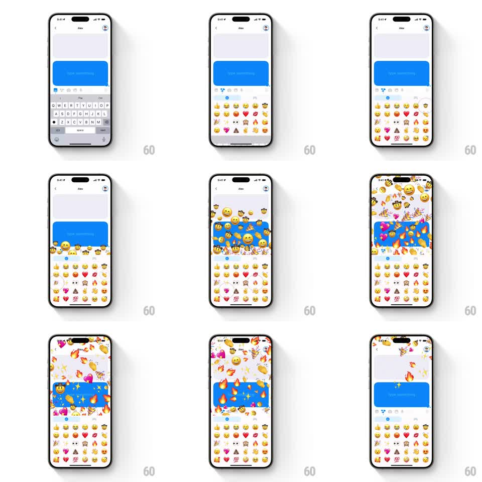

Media
Frame-by-frame

Rebuild this interaction 1:1: Honk's rage-tap emoji spam - rapid tapping across the emoji keyboard fires a full-screen emoji explosion where dozens of emojis pile up over the chat before raining out.

Rebuild this interaction 1:1: Honk's rage-tap emoji spam - rapid tapping across the emoji keyboard fires a full-screen emoji explosion where dozens of emojis pile up over the chat before raining out.
## Integration
Integration: stack-agnostic spec - springs given as stiffness/damping, timed motions as duration + curve; map every value to your framework and animation library of choice.
## Scene
Honk chat with Alex, blue live bubble ("Type something...") above an emoji keyboard grid (party faces, hearts, fire, 100, sparkles). Frantic tapping across the emoji keys launches the tapped emojis upward in massive quantities until they carpet the whole screen, then they scatter and fade.
## Motion spec
Pattern: tap-rate-proportional full-screen emoji explosion.
- Each emoji-key tap spawns 3-5 copies of that emoji at the key's position (scale 0 -> 1, near-instant), launching them upward with randomized velocity (vx +-200pt/s, vy -600 to -1000pt/s).
- Emojis are physics bodies: gravity pulls them back (gravity ~1800pt/s2), they tumble (rotation +-360deg) and bounce off screen edges (restitution ~0.4) and off each other.
- Sustained rapid tapping accumulates hundreds of live bodies, flooding the chat area, header, and status bar until the screen is buried.
- When tapping stops: remaining bodies keep simulating, then fade out over 800ms, last stragglers shrinking to sparkles.
- The blue bubble and keyboard stay visible beneath the swarm; chat content is never hit-tested away.
## Calibration
- Spawn position tracks the tapped key exactly - spreading taps across the grid spreads the eruption sources.
- Cap live bodies (~300) with oldest-first recycling so the chaos stays at 60fps.
## Reduced motion
Each tap spawns one emoji that pops and fades in place (300ms); no accumulation.
## Don't miss
- The emoji mix matches the keys actually tapped - fire taps make fire rain.
- Overwhelm is the point: at peak the screen should be unreadable under emojis.